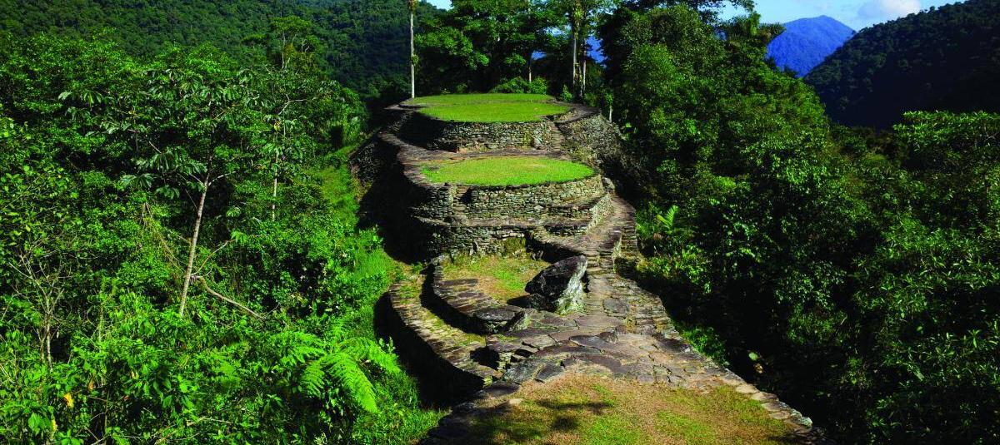
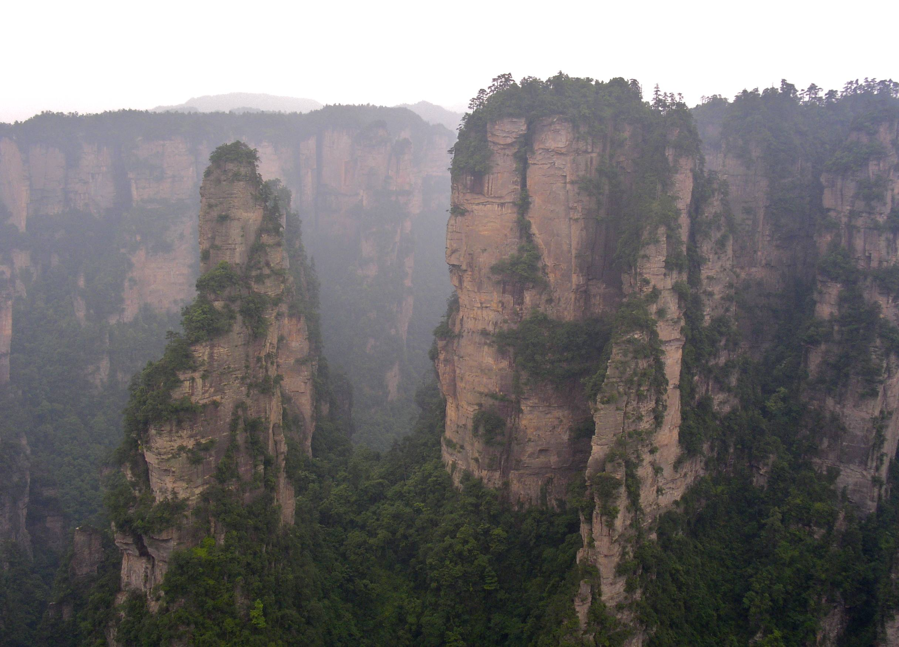

Turismo presente y futuro
1. Condiciones para un Ecoturismo Sostenible en Colombia
Para que el turismo en Colombia sea una alternativa real de desarrollo pacífico y sostenible, debe alejarse del modelo de masificación extractivista y fundamentarse en la gobernanza comunitaria, el control riguroso de la capacidad de carga en parques naturales, la infraestructura verde y una regulación estricta contra la degradación ambiental.
2. Decálogo del Turista Respetuoso
- Investigar antes de viajar sobre la historia y fragilidad ambiental del destino.
- Respetar la autonomía y cosmovisión de las comunidades locales e indígenas.
- Aplicar el principio "No Deje Rastro" retirando todos los residuos generados.
- Apoyar la economía local comprando a artesanos y guías regionales.
- Proteger la biodiversidad no extrayendo flora, fauna ni minerales.
- Permanecer en los senderos autorizados para evitar la erosión del suelo.
- Hacer un uso responsable del agua y la energía en alojamientos.
- Rechazar categóricamente la explotación animal o humana.
- Practicar una fotografía ética pidiendo autorización a los habitantes.
- Inspirar a otros promoviendo buenas prácticas de viaje en redes y blogs.
3. Destino Nacional Recomendado

Parque Nacional Natural Tayrona
Santuario natural donde la Sierra Nevada se encuentra con el Caribe. Destaca por su megabiodiversidad y la conservación ambiental liderada en conjunto con los pueblos indígenas de la Sierra.
4. Destino Internacional Recomendado

China (Zhangjiajie y Gran Muralla)
Un destino milenario que combina maravillas geológicas únicas en el mundo con una de las obras arquitectónicas e históricas más imponentes de la humanidad.